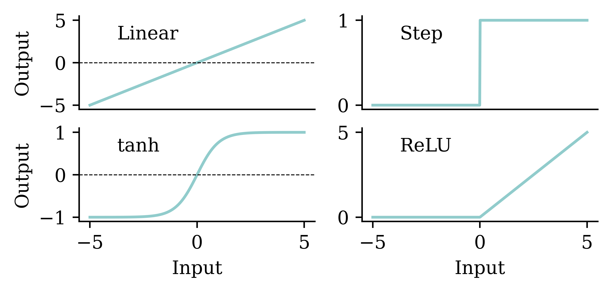

{kind=link}

Artificial Intelligence
ACTL3143 & ACTL5111 Deep Learning for Actuaries
Artificial Intelligence
Different goals of AI
Artificial intelligence describes an agent which is capable of:
| Thinking humanly | Thinking rationally |
| Acting humanly | Acting rationally |
AI eventually become dominated by one approach, called machine learning, which itself is now dominated by deep learning (neural networks).
There are AI algorithms for simple tasks that don’t use machine learning though.
Shakey the Robot (~1966 – 1972)

Route-finding I
At its core, a pathfinding method searches a graph by starting at one vertex and exploring adjacent nodes until the destination node is reached, generally with the intent of finding the cheapest route. Although graph searching methods such as a breadth-first search would find a route if given enough time, other methods, which “explore” the graph, would tend to reach the destination sooner. An analogy would be a person walking across a room; rather than examining every possible route in advance, the person would generally walk in the direction of the destination and only deviate from the path to avoid an obstruction, and make deviations as minor as possible. (Source: Wikipedia)

Route-finding II
Evaluating a chess game I
Who’s winning this game?
| 5 × 1 = 5 | |
| 0 × 3 = 0 | |
| 2 × 3 = 6 | |
| 2 × 5 = 10 | |
| 0 × 9 = 0 | |
| 1 × 0 = 0 | |
| White | 21 |
Evaluating a chess game II
Just add up the pieces for each player.

| 6 × 1 = 6 | |
| 1 × 3 = 3 | |
| 1 × 3 = 3 | |
| 2 × 5 = 10 | |
| 0 × 9 = 0 | |
| 1 × 0 = 0 | |
| Black | 22 |
Overall: 21 − 22 = −1.
The minimax algorithm


Chess
Deep Blue (1997)


Machine Learning
Tried making a computer smart, too hard!
Make a computer that can learn to be smart.

Definition
“[Machine Learning is the] field of study that gives computers the ability to learn without being explicitly programmed” Arthur Samuel (1959)

Deep Learning Successes (Images)
Image Classification I
What is this? 
Options:
- punching bag
- goblet
- red wine
- hourglass
- balloon
Note
Hover over the options to see AI’s prediction (i.e. the probability of the photo being in that category).
{kind=link}
Image Classification II
What is this?

Options:
- sea urchin
- porcupine
- echidna
- platypus
- quill
{kind=link}
Image Classification III
What is this?

Options:
- dingo
- malinois
- German shepherd
- muzzle
- kelpie
{kind=link}
ImageNet Challenge
ImageNet and the ImageNet Large Scale Visual Recognition Challenge (ILSVRC); originally 1,000 synsets.

How were the images labelled?

“Two years later, the first version of ImageNet was released with 12 million images structured and labeled in line with the WordNet ontology. If one person had annotated one image/minute and did nothing else in those two years (including sleeping or eating), it would have taken 22 years and 10 months.
To do this in under two years, Li turned to Amazon Mechanical Turk, a crowdsourcing platform where anyone can hire people from around the globe to perform tasks cost-effectively.”
Needed a graphics card
A graphics processing unit (GPU)

“4.2. Training on multiple GPUs A single GTX 580 GPU has only 3GB of memory, which limits the maximum size of the networks that can be trained on it. It turns out that 1.2 million training examples are enough to train networks which are too big to fit on one GPU. Therefore we spread the net across two GPUs.”
Lee Sedol plays AlphaGo (2016)
Deep Blue was a win for AI, AlphaGo a win for ML.

I highly recommend this documentary about the event.
Generative Adversarial Networks (2014)
https://thispersondoesnotexist.com/


Diffusion models


Dall-E 2 (2022) vs Dall-E 3 (2023)
Same prompt: “A beautiful calm photorealistic view of an waterside metropolis that has been neglected for hundreds of years and is overgrown with nature”


Deep Learning Successes (Text)
GPT

Homework Get ChatGPT to:
- generate images
- translate code
- explain code
- run code
- analyse a dataset
- critique code
- critique writing
- voice chat with you
Compare to Copilot.
Code generation (GitHub Copilot)
Students get Copilot for free

A student post from last year:
I strongly recommend taking a photo holding up your Academic Statement to your phone’s front facing camera when getting verified for the student account on GitHub. No other method of taking/uploading photo proofs worked for me. Furthermore, I had to make sure the name on the statement matched my profile exactly and also had to put in a bio.
Good luck with this potentially annoying process!
Homework It’s a slow process, so get this going early.
Programmers are increasingly using AI

Classifying Machine Learning Tasks
A taxonomy of problems

New ones:
- Reinforcement learning
- Semi-supervised learning
- Active learning
Supervised learning
The main focus of this course.
Regression
- Given policy \hookrightarrow predict the rate of claims.
- Given policy \hookrightarrow predict claim severity.
- Given a reserving triangle \hookrightarrow predict future claims.
Classification
- Given a claim \hookrightarrow classify as fraudulent or not.
- Given a customer \hookrightarrow predict customer retention patterns.
Supervised learning: mathematically

Self-supervised learning
Data which ‘labels itself’. Example: language model.


Example: image inpainting


Other examples: image super-resolution, denoising images.
Example: Deoldify images #1

Example: Deoldify images #2

Neural Networks
How do real neurons work?
A neuron ‘firing’
Similar to a biological neuron, an artificial neuron ‘fires’ when the combined input information exceeds a certain threshold. This activation can be seen as a step function. The difference is that the artificial neuron uses mathematical rules (e.g. weighted sum) to ‘fire’ whereas ‘firing’ in the biological neurons is far more complex and dynamic.
An artificial neuron

The figure shows how we first compute the weighted sum of inputs, and then evaluate the summation using the step function. If the weighted sum is greater than the pre-set threshold, the neuron `fires’.
One neuron
\begin{aligned} z~=~&x_1 \times w_1 + \\ &x_2 \times w_2 + \\ &x_3 \times w_3 . \end{aligned}
a = \begin{cases} z & \text{if } z > 0 \\ 0 & \text{if } z \leq 0 \end{cases}
Here, x_1, x_2, x_3 is just some fixed data.
The weights w_1, w_2, w_3 should be ‘learned’.
One neuron with bias
The bias is a constant term added to the product of inputs and weights. It helps in shifting the entire activation function to either the negative or positive side. This shifting can either accelerate or delay the activation. For example, if the bias is negative, it will shift the entire curve to the right, making the activation harder. This is similar to delaying the activation.
\begin{aligned} z~=~&x_1 \times w_1 + \\ &x_2 \times w_2 + \\ &x_3 \times w_3 + b . \end{aligned}
a = \begin{cases} z & \text{if } z > 0 \\ 0 & \text{if } z \leq 0 \end{cases}
The weights w_1, w_2, w_3 and bias b should be ‘learned’.
A basic neural network

This neural network consists of an input layer with 2 neurons (x_1, x_2), an output layer with 3 neurons, and 1 hidden layer with 4 neurons. Since every neuron is linked to every other neuron, this is called a fully connected neural network. Since we have 2 inputs and 1 bias in the input layer, each neuron in the hidden layer has 2+1=3 parameters to learn. Similarly, there are 4 neurons and 1 bias in the hidden layer. Hence, each neuron in the output layer has 4+1=5 parameters to learn.
Step-function activation
Perceptrons
Brains and computers are binary, so make a perceptron with binary data. Seemed reasonable, impossible to train.
Modern neural network
Replace binary state with continuous state. Still rather slow to train.
Note
It’s a neural network made of neurons, not a “neuron network”.
Try different activation functions

Activation functions are essential for a neural network design. They provide the mathematical rule for ‘firing’ the neuron. There are many activation functions, and the choice of the activation function depends on the problem we are trying to solve. Note: If we use the ‘linear’ activation function at every neuron, then the regression learning problem becomes a simple linear regression. But if we use ‘ReLu’, ‘tanh’, or any other non-linear function, then, we can introduce non-linearity into the model so that the model can learn complex non-linear patterns in the data. There are activation functions in both the hidden layers and the output layer. The activation function in the hidden layer controls how the neural network learns complex non-linear patterns in the training data. The choice of activation function in the output layer determines the type of predictions we get.
Flexible
One can show that an MLP is a universal approximator, meaning it can model any suitably smooth function, given enough hidden units, to any desired level of accuracy (Hornik 1991). One can either make the model be “wide” or “deep”; the latter has some advantages…
Feature engineering


Doesn’t mean deep learning is always the best option!
A major part of traditional machine learning (TML) involves conducting feature engineering to extract relevant features manually. In contrast, representational learning does not involve heavy manual feature engineering, rather, it learns relevant features automatically from data during the task. Therefore, the effort spent on feature engineering in representational learning is minimal compared to TML.
Quiz
In this ANN, how many of the following are there:
- features,
- targets,
- weights,
- biases, and
- parameters?
What is the depth?

There are three inputs, hence, three features. There is one neuron in the output layer, hence, one target. There are 3 \times 4 + 4 \times 4 + 4\times 1 = 32 arrows, hence, there are 32 weights in total. Since there is 1 bias for each neuron, there are 9 biases in total. The number of total parameters to learn equals to the sum of weights and biases, hence, there are 32+9=41 parameters in total.
Package Versions
from watermark import watermark
print(watermark(python=True, packages="keras,matplotlib,numpy,pandas,seaborn,scipy,torch,tensorflow,tf_keras"))2024-07-14 12:36:34.861770: I tensorflow/core/util/port.cc:113] oneDNN custom operations are on. You may see slightly different numerical results due to floating-point round-off errors from different computation orders. To turn them off, set the environment variable `TF_ENABLE_ONEDNN_OPTS=0`.
2024-07-14 12:36:34.902481: I tensorflow/core/platform/cpu_feature_guard.cc:210] This TensorFlow binary is optimized to use available CPU instructions in performance-critical operations.
To enable the following instructions: AVX2 AVX_VNNI FMA, in other operations, rebuild TensorFlow with the appropriate compiler flags.
2024-07-14 12:36:36.188590: W tensorflow/compiler/tf2tensorrt/utils/py_utils.cc:38] TF-TRT Warning: Could not find TensorRTPython implementation: CPython
Python version : 3.11.9
IPython version : 8.24.0
keras : 3.3.3
matplotlib: 3.9.0
numpy : 1.26.4
pandas : 2.2.2
seaborn : 0.13.2
scipy : 1.11.0
torch : 2.3.1
tensorflow: 2.16.1
tf_keras : 2.16.0
Glossary
- activations, activation function
- artificial neural network
- biases (in neurons)
- classification problem
- deep network, network depth
- dense or fully-connected layer
- feed-forward neural network
- labelled/unlabelled data
- machine learning
- neural network architecture
- perceptron
- ReLU
- representation learning
- sigmoid activation function
- targets
- weights (in a neuron)